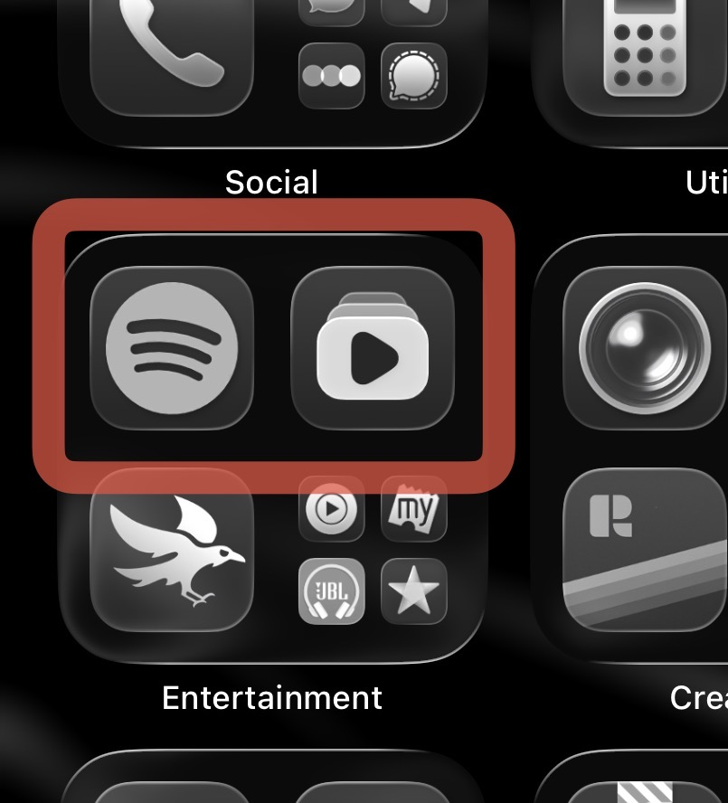
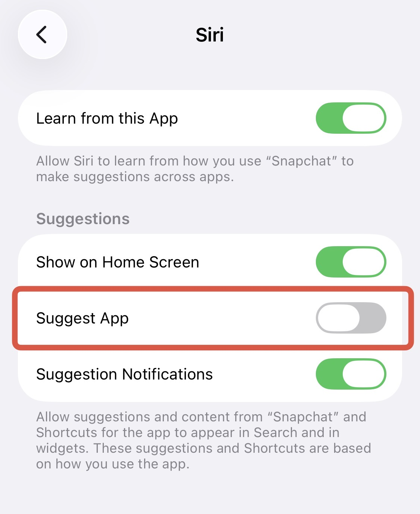

Reducing My Mobile Usage
I have tried everything I could, i made my home screen minimal, I tried adding time restrictions (which failed, they’re annoying, I like control). The problem was always that even if i hid the app away from my home screen, i would have easy access to it through the library, and end up in a loop after subconsciously tapping at it.

%% The suggested apps in question.%%Thus, I found a solution, removing these apps from visibility all together, while not restricting access in any manner.
The Solution
Apple has a lot of settings you can customise, all hidden in obscure places. The suggested apps works on the data Siri gathers from the apps via indexing and usage. And you can customise whether Siri will suggest the app or learn from the app on per app basis.
Steps:
- Open settings and find the app 1 you want to hide
- Enter the Siri section and turn off the ‘Suggest This App’ toggle.

04-02-2026
-
(in the apps section near the bottom) ↩